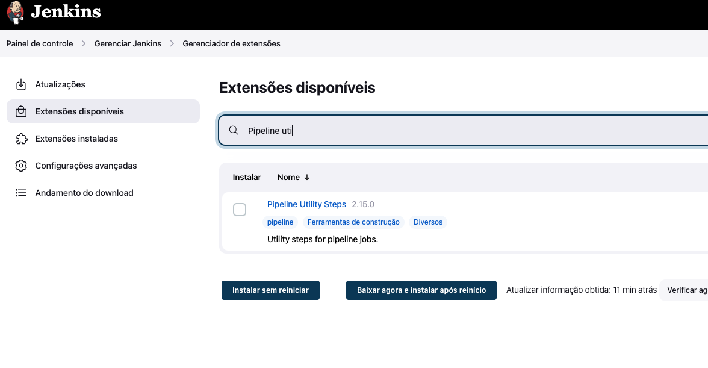
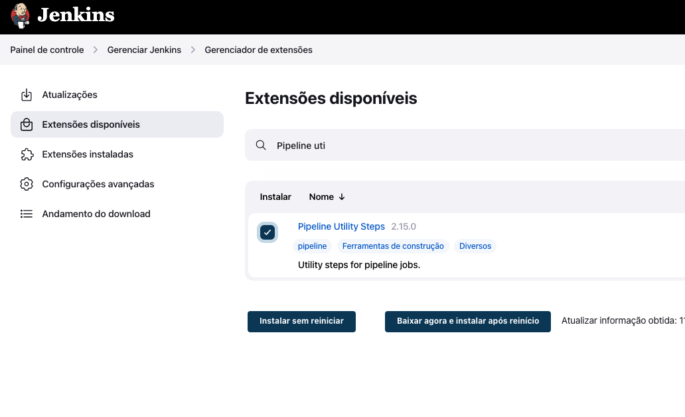
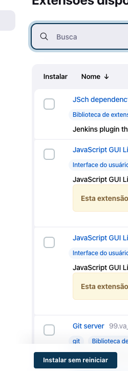
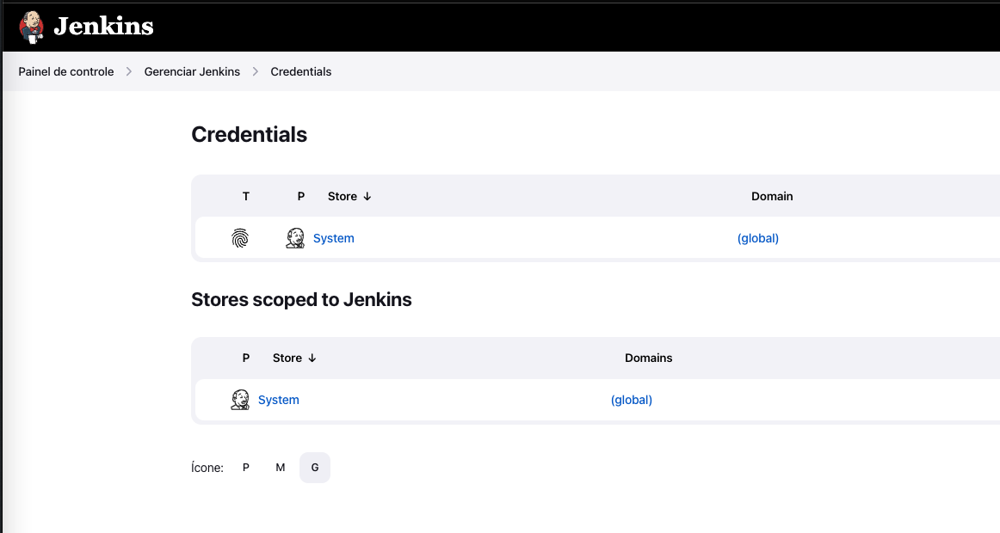
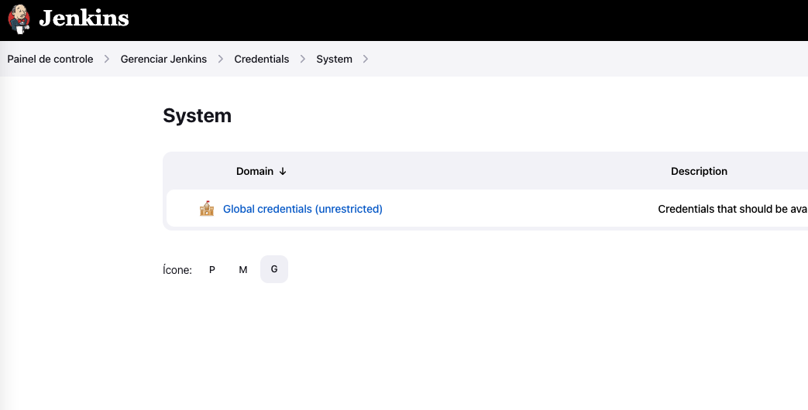
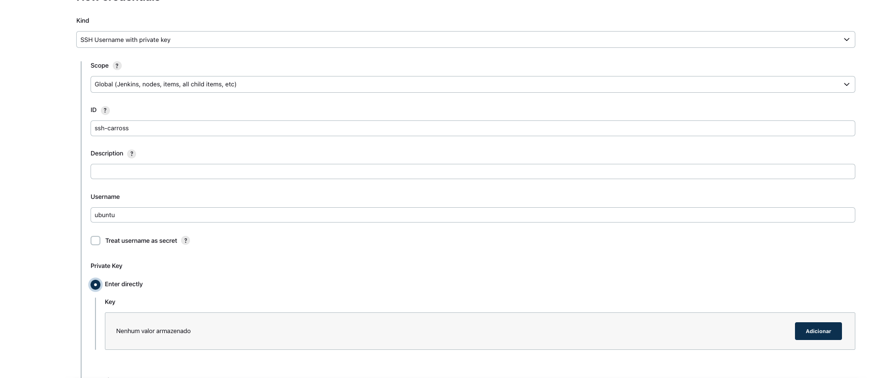
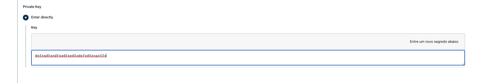

Configurações Adicionais
Jenkins
Apontando o Nexus
Precisamos apontar o maven para o nexus, como o modelo do arquivo settings.xml ,não se esqueça de trocar os valores personalizados da sua instalação
#Configurando settings.xml do maven
cd /var/lib/jenkins
su jenkins
mkdir .m2
cd .m2
vim settings.xml
#cole o conteúdo do link acima settings.xml substituindo os valores
#salve o arquivo
Instalando Plugins adicionais no Jenkins
precisamos instalar alguns plugins e configurar algumas variáveis no jenkins Acesse o Jenkins e logue no sistema como admin Acesse o menu Painel de Controle -> Gerenciar Jenkins -> Gerenciador de Extensões
Marque os Plugins para instalação Pipeline Utiliti Steps SSH Agent Plugin
Clique no botão Instalar sem reinicar
Apos a instalação Marque a opção abaixo

Aguarde o reinicio Novamente no ar acesse o menu Painel de Controle -> Gerenciar Jenkins -> Credentials Clique em Sistem
Clique em Global Credentiasl
Clique no Botão Add Credential

Escolha a opção na lista SSH Username with private key
Prencha conforme abaixo
depois no campo Key clique em Adicionar
Abra o arquivo carros-api.pem e cole o conteudo no campo Key
Finalize com o botão Create